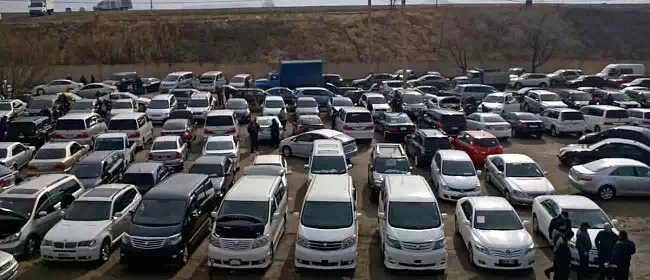

Инвестиции: 0 ₽
Прибыль: 10 000 ₽/мес

Чтобы узнать город с иной, непарадной стороны и увидеть уникальные объекты, туристы ищут необычные, эксклюзивные места для посещения и исследования. Заброшенные здания, трущобы, различные подземные коммуникации и крыши идеально воссоздают такую таинственную атмосферу.
Но зачастую проход в такие места сложен, затруднен или даже запрещен администрацией города и без опытного проводника в них не попасть. Подобный сталкеризм пользуется популярностью на Западе, а в странах СНГ держится, в основном, на немногочисленных энтузиастах. Это туристическое направление у нас мало освоено, поэтому вы можете легко преуспеть в нем. Особенно учитывая возросшую долю внутреннего туризма в России.